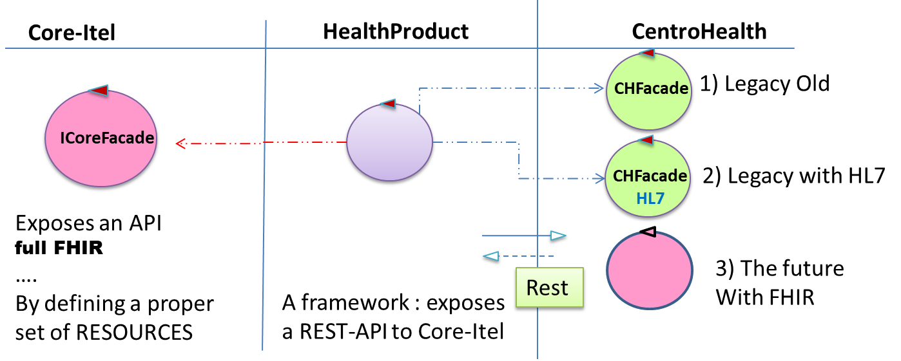
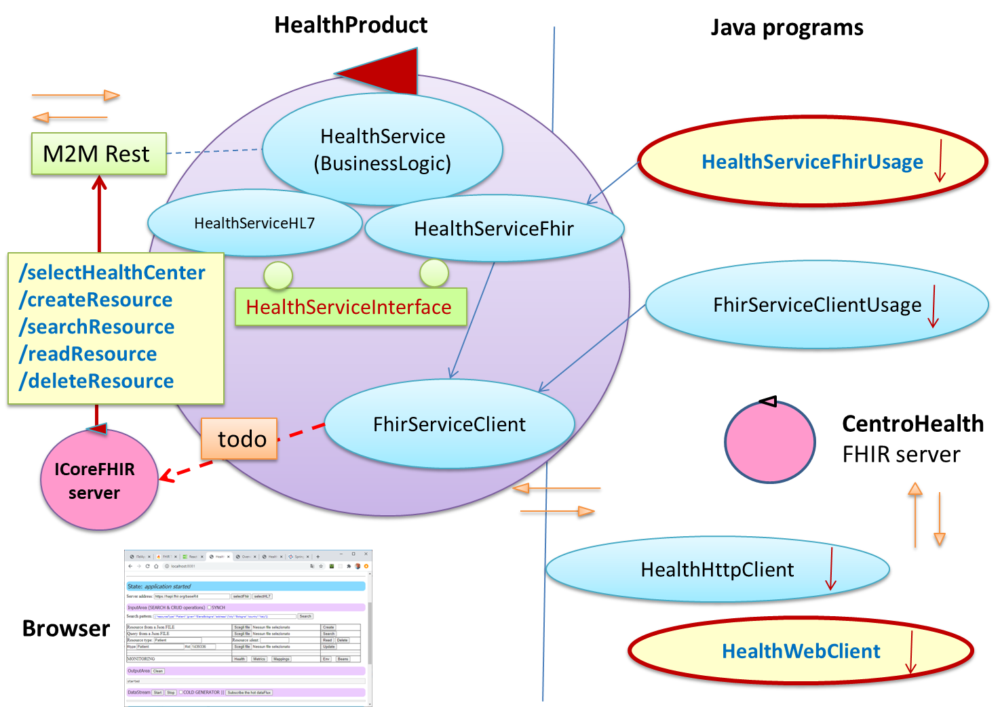

HealthAdapterFacade | Project description
References
Background
Flux
- Flux (Progetto Reactor) e' stato introdotto per offrire un supporto allo sviluppo di applicazioni reattive, superando il livello dei 'meccansimi' introdotto da Reactive Streams.
- Flux e' il tipo-base di Reactor che fornisce un contenitore di 0..N oggetti che 'esistono' solo dopo che qualcuno ha fatto una 'subscribe' al Flux.
- Un Flux di tipo 'hot' produce oggetti indipendentemente dai subscribers. Una subscribe 'riceve' gli oggetti prodotti dopo che la subscribe e' avvenuta.
Server
- Un server REST per interazioni M2M puo' fornire operazioni (sincrone) che restitusicono una
String Flux<String> - La classe
HealthAdapterMIController.java HTTP calls
- Un call HTTP a una operazione che restituisce un Flux implica una subscribe a quel Flux.
- Una call HTTP effettuata dall'operazione JavaScript fetch restituisce una 'promise' che produce la risposta quando il Flux sare' completato. Questo anche nel caso che il Flux restituito sia 'hot'.
- Una call HTTP effettuata attraverso un WebClient restituisce un Flux di cui si possono elaborare gli elementi mano a mano sono generati.
WebClient vs. RestfulGenericClient
IPOTESI: RestfulGenericClient permette di fare 'ex-ante' quello che con WebClient posso fare alla ricezione del flusso. RestfulGenericClient permette una riduzione di flusso. TODO
- Esperimenti con Flux di tipo 'hot':
Introduzione
Con riferimento alla terminologia introdotta in ITelAppl.html, questo e' il primo prototipo per un HeathProduct il cui scopo e':- fornire un insieme di (REST) API che permettano al Core-Itel di inviare informazioni a un
UNICO (al momento) CentroHealth (FHIR,Hl7,legacy) relativo a uno specifico CentroBase per chiedere dati su paziente e piano terapeutico; - fornire un componente capace di ricevere informazioni (su pazienti e piani terapeutici) dal CentroHealth (FHIR,Hl7,legacy)
e trasmetterle al Core-Itel usando una interfaccia API fornita dal Core-Itel stesso
attraverso un FHIR sever (ad esempio ). IBM FHIR (al momento il piu' papabile): Documento di comparison fra i due:
FHIR server di riferiemto
- IBM FHIR: https://github.com/IBM/FHIR (documentazione https://ibm.github.io/FHIR/guides/FHIRServerUsersGuide)
- HAPI FHIR: https://github.com/hapifhir/hapi-fhir-jpaserver-starter
- Confronto: https://dev-itel.atlassian.net/wiki/spaces/NEXTAGORA/pages/167215105/FHIR+Implementations+Comparison
|
 Prima versione del prototipo: 
|
Versione dopo DISCUSSIONE 18/08 con JC  |
HealthServiceInterface.java
La business logic del prodotto e' definita da componenti che implementano la interfacciaUn componente che implementa questa interfaccia e'//ASYNCH public Flux<String> readPatientAsynch(Long id); public Flux<String> createPatientAsynch(String jsonStr); public Flux<String> searchResourceAsynch(String jsonTemplate); public Flux<String> deleteResourceAsynch( String resourceType, String id ); }
Un altro componente che implementa questa interfaccia puo' essere
HealthService.java
Il componente
public static enum HealthCenterType{ FHIR, HL7, OTHER};
WARNING: these URI are used in templates\indexHealthAdapterFacade.html
public static final String selectHealthCenterUri ="/selectHealthCenter "; ///{argchoice:FHIR, argserveraddr:https://hapi.fhir.org/baseR4}
public static final String createPatientUri ="/createPatient "; ///patientname
public static final String readPatientUri ="/readPatient "; ///patientid
public static final String searchResourceUri ="/searchResource "; ///patientname
public static final String deleteResourceUri ="/deleteResource "; ///patientid
Le informazioni da trasmettere/ricevere a centri FHIR sono per ora limitate a un sottoinsieme di valori relativi a
FHIR Patient.
La classe Patient: DomainResource identifier : Identifier Element use:code,type:CodeableConcept,system:uri,value:string,period:Period,assigner:Reference active : boolean name : HumanName Element use,text,family,given,prefix,suffix,period telecom : ContactPoint Element system:code, value:string, use:code,rank:positiveInt,period:Period gender : code deceasedBoolean : boolean deceasedDateTime : dateTime address : Address maritalStatus : CodeableConcept Element coding:Coding text:string multipleBirthBoolean : boolean multipleBirthInteger : integer photo : Attachment contact : BackboneElement Element (relationship:language:CodeableConcept,name:HumanName, telecom:ContactPoint,address:Address,gender:code, organization:Reference,period:Period) communication : BackboneElement Element (language:CodeableConcept,preferred:boolean) generalPractitioner : Reference managingOrganization : Reference link : BackboneElement Element (other: Reference, type:Code
Attivazione della applicazione REST
Eseguire HealthAdapterFacadeApplication.java, localhost:8081 (e attivare JConsole).Organizzazione della applicazione REST
- Si tratta di una applicazione SpringBoot che usa WebFlux, SSE, etc. Si veda build.gradle
- La business logic e' definita nel @Service HealthService.java
- Il controller HealthAdapterHIController.java si occupa della interazione con un agente umano attraverso le presentazione di una pagina HTML
- Il REST controller HealthAdapterMIController.java si occupa della interazione machine-to-machine
- Sono disponibili endpoint di monitoring quali:
http://localhost:8081/actuator/health http://localhost:8081/actuator/env ...
Using FHIR server with curl
One publishes, one consumes. Your application publishes data to a consumer. So you have a client (curl) that wants to consume data. To consume it, curl subscribes to a webflux stream and webflux delivers either one or many objects. If its one object it delivers a Mono<T> if it's many it delivers a Flux<T>.Inspired by Cloud Healthcare API documentation
Create:curl -d "@data.txt" -H "Content-Type: application/fhir+json; charset=utf-8" -X POST https://hapi.fhir.org/baseR4/Patient Read: curl https://hapi.fhir.org/baseR4/Patient/1435901 -i -X GET Search: curl http://hapi.fhir.org/baseR4/Patient?family:exact=Smith -i -X GET Delete: curl http://hapi.fhir.org/baseR4/Patient/1435884 -i -X DELETE
Using HealthAdapterFacade with curl
Create: curl -d "ElenaBologna" -H "Content-Type: plain/text" -X POST http://localhost:8081/createPatientWithout -H: HealthAdapterMIController ERROR In a WebFlux application, form data is accessed via ServerWebExchange.getFormData(). Read: curl http://localhost:8081/readResource/1435901 -i -X GET Search: curl http://localhost:8081/searchPatient/ElenaBologna -i -X GET Delete: curl -d "1435899" -H "Content-Type: plain/text" http://localhost:8081/deleteResource -X POST
Esempi di uso della applicazione da programmi (Java)
- HealthServiceFhirUsage.java: utilizza la business logic definita in HealthServiceFhir.java usata come POJO al di fuori di SprinBoot. Questo POJO utilizza una istanza di FhirServiceClient.java: basato sul client fornito da ca.uhn.fhir.rest.client.api.IGenericClient dalla libreria FHIR.
- FhirServiceClientUsage.java: utilizza il servizio fornito da FhirServiceClient.java.
- HttpClientHealthAdapter.java: che realizza una convenzionale interazione HTTP con HealthProduct basandosi su java.net.HttpURLConnection a su org.json
- HttpClientFhirServer.java: che realizza una convenzionale interazione HTTP con FHIR server basandosi su java.net.HttpURLConnection a su org.json
- HealthWebClient.java: basato sul WebClient reattivo org.springframework.web.reactive.function.client.WebClient fornito da Spring
React
From w3schools.com React Getting Started , w3schools.com React TutorialQuesta applicazione permette di costruire le pagine lato server e di aggiornarle in modo automatico quando cambiano.
npm install -g create-react-app npx create-react-app myfirstreact cd myfirstreact npm start localhost:3000